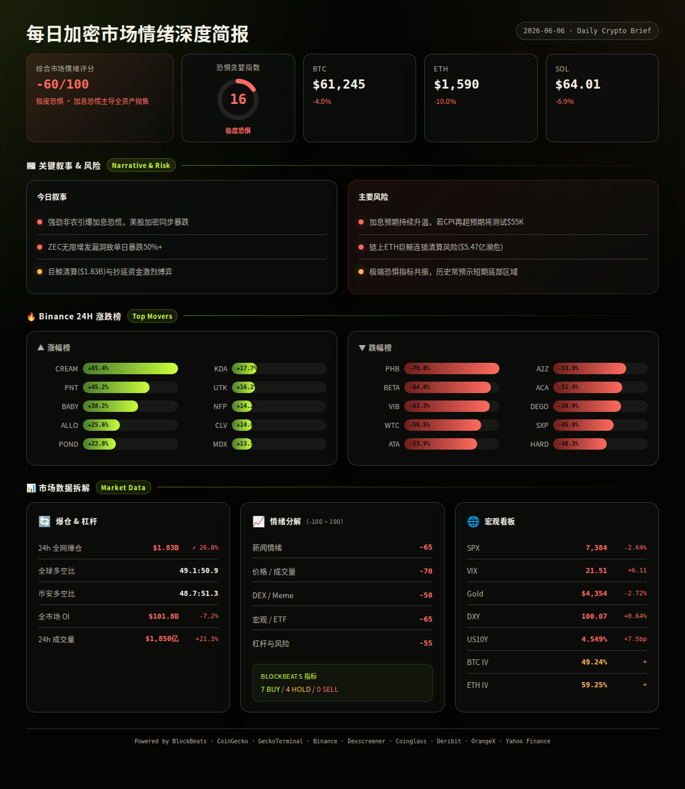
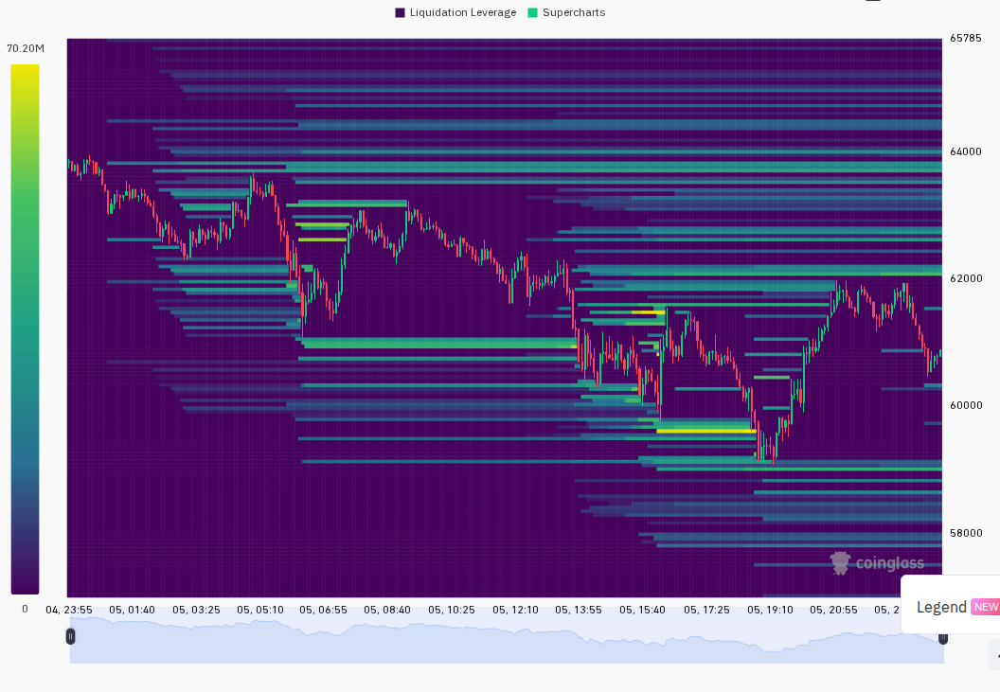
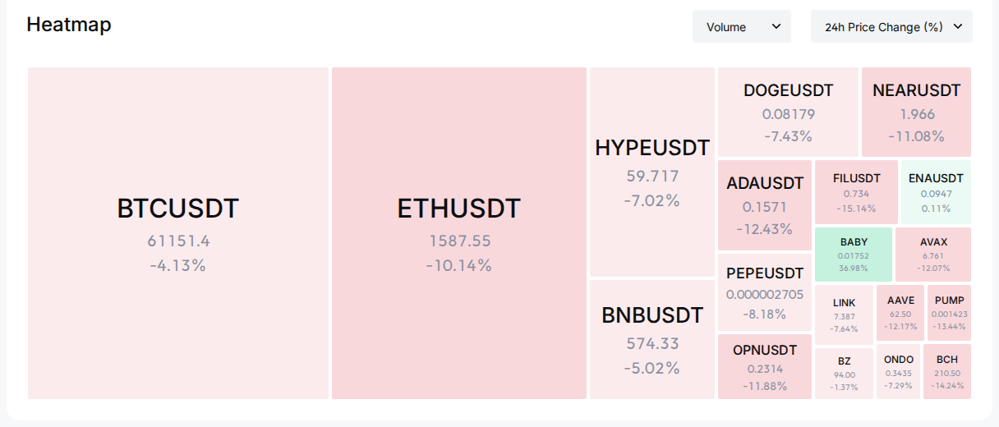

=== 第一段：叙事与风险面 ===
6月5日非农数据远超预期引爆加息恐慌，美股纳指暴跌超4%，加密市场同步重挫。BTC一度跌破$60,000后小幅反弹至$61,200附近，ETH单日暴跌10%创历史最严重超卖日。Zcash"无限增发"漏洞曝光致ZEC腰斩。恐慌情绪全面主导，F&G降至16（极度恐惧），VIX跳升至21.5（恐慌升高），全资产类别同步下跌，无避险资产幸免。
24h变化: 情绪 -60(极度恐惧) | BTC ↘4.0% | ETH ↘10.0% | SOL ↘6.9% | VIX ↗6.1至21.5(恐慌升高) | 成交量 ↗21.3%(恐慌放量) | 爆仓 ↗26.8%至$1.83B (multi-source)
宏观冲击主导一切。强劲非农彻底改变了市场对美联储政策路径的定价——降息叙事被完全推翻，加息预期急升。美股、加密、黄金同步暴跌，呈现典型的流动性恐慌特征。与此同时，Zcash四年潜伏漏洞曝光引发单币种崩塌，链上ETH巨鲸大规模濒临清算，市场进入极端风险规避模式。
信息 1: 5月非农就业数据远超预期——"Powell Era"首份非农报告即大幅超预期，市场定价明年1月加息概率急升，12月加息概率同时飙升。分析师称非农"完全推翻了美联储降息的所有理由"。 (BlockBeats)
信息 2: 美股重挫——纳指暴跌超4%，标普500下跌2.64%，芯片、CPI概念、加密概念股全线重挫。Bitwise CIO认为SpaceX超级IPO可能同时在分流美股和加密市场资金。 (BlockBeats, Yahoo Finance)
信息 3: BTC一度跌破$60,000，随后反弹至$61,200附近。MVRV比率降至1.19进入历史积累区间，Ahr999指标再度逼近0.3关键阈值。江卓尔认为BTC未有效跌破$60,000支撑，周末可能反弹。 (BlockBeats)
信息 4: ETH单日暴跌10%，创史上最严重超卖日。链上多只ETH巨鲸面临清算风险——统计显示34.3万ETH（约$5.47亿）接近清算价格。某开仓5.8万ETH多单的巨鲸距清算价仅$40。另一只4个月前加杠杆的链上鲸鱼已被清算15,042 ETH。 (BlockBeats)
信息 5: Zcash"无限增发"漏洞潜伏四年被披露，ZEC单日暴跌超50%。该漏洞无法证明是否已被利用——Orchard Pool供应审计正在进行中。Alliance DAO逆势喊多称"ZEC现在类似早期BTC"。THORChain延迟ZEC上线。 (BlockBeats)
信息 6: 宏观三杀——VIX单日跳升+6.11至21.51（恐慌升高），黄金跌2.72%，原油跌超2%。DXY突破100（+1.15%/7d），US10Y升至4.549%（+11bp/7d）。全资产类别无一幸免，典型的"现金为王"恐慌模式。 (Yahoo Finance, BlockBeats)
信息 7: SEC与CFTC联合推进代币化证券监管框架，以"创新但不监管套利"为原则。美国众议院筹划20年战略比特币储备持有期。众议院筹款委员会提出加密税收全面改革框架。监管面出现建设性信号，但短期被宏观恐慌淹没。 (BlockBeats)
信息 8: 板块轮动——CoinGecko数据显示：DRC-20（+188%，$6.9M市值）、街机游戏Arcade Games（+38%，$556M）、TRY稳定币（+32%）逆势上涨。Echo Launchpad（-40.5%）、Groypad生态（-38.9%）、TimeFi（-34.2%）跌幅居前。注：涨幅板块多为小市值，代表性有限。 (CoinGecko)
信息 9: Binance涨跌榜——涨幅前3：CREAM +65.35%、PNT +45.23%、BABY +38.22%。跌幅前3：PHB -70%、BETA -64%、VIB -63.26%。跌幅榜幅度远超涨幅榜，市场下行力度极强。 (Binance)
信息 10: BlackRock ETF逆势净流入537枚BTC（约$3,300万），被市场解读为潜在中期底部信号。F2Pool联创Chun Wang疑似抄底，提取9,719 ETH。某鲸鱼从Aave借款$7,642万买入44,845 ETH。然而另一面，"币安传奇"巨鲸持续被强制减仓。 (BlockBeats)
信息 11: Polymarket巨鲸Adrian Cronauer疑似遭遇钓鱼攻击，损失超$200万。Kraken将通过xStocks平台向部分用户提供SpaceX IPO参与资格。Bitget已上线45只美股现货交易对。加密交易所加速与传统金融融合。 (BlockBeats)
信息 12: 风险投资动态——Variant完成$2.22亿新基金募资，聚焦AI与加密早期项目。a16z领投AI初创Lassie $3,500万A轮。Kaiko收购Amberdata推动数字资产数据行业整合。 (BlockBeats)
风险 1: 加息预期持续发酵，风险资产面临进一步重定价 → 观察: 若下周CPI数据同样强于预期，则加息概率将进一步跳升，BTC可能测试$55,000-$58,000区间；失效条件: 若美联储官员口头干预安抚市场，VIX回落至18以下。 (BlockBeats, analysis)
风险 2: 链上ETH巨鲸连锁清算风险——34.3万ETH濒临清算 → 观察: 若ETH跌破$1,540，可能触发级联清算将价格推向$1,400；失效条件: 若大户成功补充保证金或价格反弹至$1,700以上。 (BlockBeats, analysis)
风险 3: SpaceX超级IPO资金分流效应 → 观察: 若IPO持续吸引资金，加密与美股可能同时面临流动性抽取；失效条件: 若IPO后资金回流，市场可能在6月中旬企稳。 (BlockBeats, analysis)
风险 4: Zcash漏洞信任危机蔓延至隐私币赛道 → 观察: 若审计证实漏洞未被利用，ZEC可能出现报复性反弹；失效条件: 若确认被利用，隐私币赛道可能面临长期信任折价。 (BlockBeats, analysis)
风险 5: 伊朗-美国谈判陷入僵局，地缘政治风险溢价 → 观察: 若谈判完全破裂，中东风险可能进一步推高美元避险需求，不利于加密；失效条件: 若达成阶段性协议释放冻结资产。 (BlockBeats, analysis)
风险 6: 市场情绪极端恐惧后的反弹可能 → 观察: F&G 16 + BB情绪指标7买0卖 + MVRV 1.19 + Ahr999接近0.3均处于历史极端值，超跌反弹概率不低；失效条件: 若出现新的宏观利空（如信用事件），极端恐慌可能继续加深。 (multi-source, analysis)
非财务建议声明: 本报告仅提供市场数据和情绪分析，不构成任何买卖建议。
6月6-7日 — 非农数据后续消化，美联储官员讲话密集期 → 若鹰派则进一步打压风险资产，鸽派则可能引发反弹 (bearish biased)
6月8-9日 — SpaceX IPO正式交易首周，观察资金分流效应 → 若美股持续吸金则加密承压 (bearish biased)
6月10日 — 美国CPI数据发布（5月）→ 若CPI超预期将确认滞胀叙事，极不利于风险资产 (bearish/bullish)
6月11日 — Zcash Orchard Pool审计结果预期公布 → 若确认漏洞未被利用，ZEC可能出现大幅反弹 (bullish/bearish for ZEC)
6月12日 — ETH 6月期权到期日（名义价值约$8亿）→ 最高痛点在$1,800，当前价格远低于此，到期前可能波动加剧 (neutral/bearish)


=== 第二段：数据与技术面 ===
整体评分: -60/100（极度恐惧）
5大分项:
新闻情绪: -65/100 — 非农引爆加息恐慌主导所有叙事，ZEC漏洞、ETH巨鲸清算、美股暴跌叠加形成极端负面情绪。虽有BlackRock ETF逆势流入和鲸鱼抄底的积极信号，但被系统性恐慌完全淹没。 (BlockBeats)
价格/成交量: -70/100 — BTC -4.0%、ETH -10.0%、SOL -6.9%。成交量急剧放大（+21.3%），典型恐慌性抛售放量。ETH跌幅远超BTC，表明山寨币流动性危机加剧。BTC.D升至56.1%（+2pp），资金向BTC集中避险。 (Binance, CoinGecko, Coinglass)
DEX/meme 活跃度: -50/100 — Solana链上DEX活跃度低迷，GeckoTerminal trending pools中仅少数池超$1M日成交量。新池无一满足$50k流动性+$100k成交量阈值。高流动性池以稳定币对和SOL/USDC为主，无显著meme热点。 (GeckoTerminal)
宏观/ETF/流动性: -65/100 — SPX -2.64%，VIX跳升至恐慌升高区间(21.5)，黄金-2.72%，DXY+0.64%，US10Y+7.5bp。全资产风险回避，美元走强对加密构成额外压力。 (Yahoo Finance, BlockBeats)
杠杆与风险: -55/100 — 24h爆仓$1.825B(+26.79%)，多空比偏空。OI下降7.22%显示主动去杠杆。合约多空比偏离指数为Hold，山寨币抗跌指数为Hold。BTC ATM IV 49.24%（正常偏高），ETH ATM IV 59.25%（正常偏高），ETH-BTC IV价差10.01%（未达15%投机溢价阈值）。 (Coinglass, CoinGecko, Deribit)
BlockBeats 底部/顶部指标完整明细:
· 整体市场流动性指数: Buy
· 比特币流动性指数: Buy
· 以太坊流动性指数: Buy
· 过去24小时累积比特币流动性指数: Buy
· 整体市场流动性（以比特币为单位）: Buy
· 合约多空比偏离指数: Hold
· 山寨币抗跌指数: Hold
· Bitfinex BTC/USD 溢价: Hold
· USDC/USDT 溢价: Hold
· Binance USDT 借贷利率: Buy
· 持仓量加权资金费率年化利率: Buy
综合: 7 Buy / 0 Sell / 4 Hold — 流动性指标全面偏多（大资金进场迹象），但合约与山寨币指标维持中性观望。指标与价格形成显著背离：流动性在改善，宏观冲击压制价格。这通常是潜在底部区域的信号，但需宏观情绪转暖才能真正触发反弹。 (BlockBeats, analysis)
BTC: $61,245，24h -4.02%，24h成交量55,058 BTC（$33.8亿）。24h区间 $59,131 - $63,978。近3根1h蜡烛：在$61,000-$61,700窄幅盘整，反弹力度微弱。premiumIndex微折价-0.04% —— 期货市场对现货价格略偏悲观。 (Binance)
ETH: $1,590，24h -10.02%，24h成交量125.8万 ETH（$20.6亿）。24h区间 $1,540 - $1,775。近3根1h蜡烛：反弹至$1,590附近，远低于24h中心价$1,657，弱势明显。premiumIndex微折价-0.05% —— 期货偏悲观。ETH/BTC比率降至0.0260，接近年内低点。 (Binance)
SOL: $64.01，24h -6.88%，24h成交量704.8万 SOL（$4.6亿）。24h区间 $61.48 - $69.10。跌幅小于ETH，相对韧性。premiumIndex微折价-0.05%。SOL/BTC比率相对稳定。 (Binance)
全球市场: 总市值$2.18万亿，24h缩水-4.18%。24h总成交量$1,850亿。BTC.D升至56.1%（+约2pp），山寨季指数显示资金明显向BTC集中避险。 (CoinGecko)
衍生品杠杆（全平台）: BTC Deribit ATM IV 49.24%（正常偏高），ETH 59.25%（正常偏高），ETH-BTC IV价差10.01%（未触发15%的投机溢价预警）。主流大所费率均在正常范围，无显著多头过热或空头拥挤。 (CoinGecko, Deribit)
清算数据: 24h全市场爆仓$18.25亿（+26.79%较前日）。多空比偏空（多49.06% vs 空50.94%）。Binance TV多空比48.71% vs 51.29%，与全球一致。市场整体偏空，但并非极端拥挤——如果空头过度集中，可能为轧空创造条件。 (Coinglass)
跨平台OI: BlockBeats合约数据（6月4日）: Binance OI $186.8亿，Bybit $96.7亿，Hyperliquid $61.4亿。三平台同步下降（-4%至-12%），确认市场处于去杠杆阶段。 (BlockBeats)
宏观看板: SPX 7,383.74（-2.64%），VIX 21.51（恐慌升高），DXY 100.07（+0.64% 24h, +1.15% 7d），US10Y 4.549%（+7.5bp 24h, +11.0bp 7d），黄金 $4,353.90（-2.72%）。BTC与SPX同向下跌（正相关），与黄金同向下跌——全资产"现金为王"模式。 (Yahoo Finance, BlockBeats)
期权波动率: BTC ATM IV 49.24%（正常区间偏高），ETH ATM IV 59.25%（正常区间偏高）。与VIX 21.51（恐慌升高）相比，加密期权IV尚未进入恐慌定价，期权市场认为当前波动可控。 (Deribit)
精选热门标的（基于CoinGecko trending + BlockBeats叙事 + DEX流动性交叉验证）:
ZEC (Zcash, 多链): $153, 24h -50%+, 市值约$25亿。催化剂: "无限增发"漏洞引发恐慌性抛售，Alliance DAO逆势喊多。风险: 若漏洞确认被利用，信任将不可修复。 (CoinGecko, BlockBeats)
HYPE (Hyperliquid): 市值#10，CG trending #5。催化剂: 生态交易量$125.8亿/日。风险: 平台币随市场beta下跌。Dexscreener 未检索到可靠 DEX 数据。 (CoinGecko, BlockBeats)
CREAM (Cream Finance): $2.10, 24h +65.35%。催化剂: Binance涨幅榜首。风险: 成交量极小($27.6万)，易操纵。 (Binance)
BABY (BabySwap, BSC): $0.0177, 24h +38.22%。催化剂: BSC生态。风险: Meme属性，高波动。 (Binance)
WORLDCUP (Solana): $0.0072, 24h +67.35%, DEX成交量$186万。催化剂: 世界杯概念meme。风险: 极低流动性($27.4万)。 (GeckoTerminal)
· GeckoTerminal Solana trending_pools (>$1M 24h成交量): TROLL/SOL ($3.2M, $2.8M liq, -1.4%), HUNTER/SOL ($2.9M, $91K liq, +9.2%), three/SOL ($3.9M, $217K liq, -49.1%)。 (GeckoTerminal)
· GeckoTerminal Solana new_pools (>$50k流动性 + >$100k成交量): 无满足条件的早期信号池。
· BlockBeats Solana链上净流入Top 5: cbBTC $1.18亿, WBTC $1,058万, SYRUPUSDC $130万, HOODX $53.9万, SIMPLE $39.1万。BTC类资产通过跨链桥涌入Solana，可能用于DeFi抵押或套利。 (BlockBeats)
注意: 以上为市场热度观察清单，非买入建议。
基于以上全部数据，未来24-48小时3种情景分析:
情景 1 (概率: 45%, 置信度: 高): 恐慌延续，BTC测试$58,000-$60,000支撑。宏观情绪主导——非农后续解读偏鹰，美股继续承压，加密同步下行。ETH可能测试$1,450-$1,500。关键条件: VIX维持20以上，DXY站稳100上方，无美联储鸽派干预。若发生则 BTC目标: $58,500, ETH: $1,480。 (analysis)
情景 2 (概率: 35%, 置信度: 中): 超跌技术性反弹，BTC回升至$62,500-$64,500。F&G 16 + MVRV 1.19 + Ahr999接近0.3 + BB流动性指标全面Buy形成历史极端共振。周末流动性较低，空头获利了结可能驱动技术反弹。关键条件: 无新增宏观利空，BTC守住$60,000。若发生则 BTC目标: $63,500, ETH: $1,700。 (analysis)
情景 3 (概率: 20%, 置信度: 低): 宏观情绪急剧恶化，BTC跌破$55,000。若伊朗-美国谈判完全破裂叠加美联储鹰派升级，或出现credit事件。关键条件: 需要新增重大利空。若发生则 BTC目标: $54,000, ETH: $1,300。 (analysis)
以上为基于当前数据的概率判断，不构成交易建议。